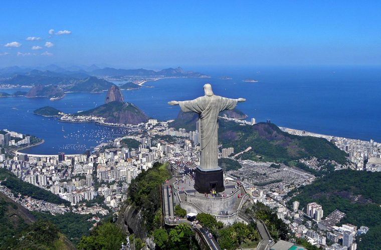
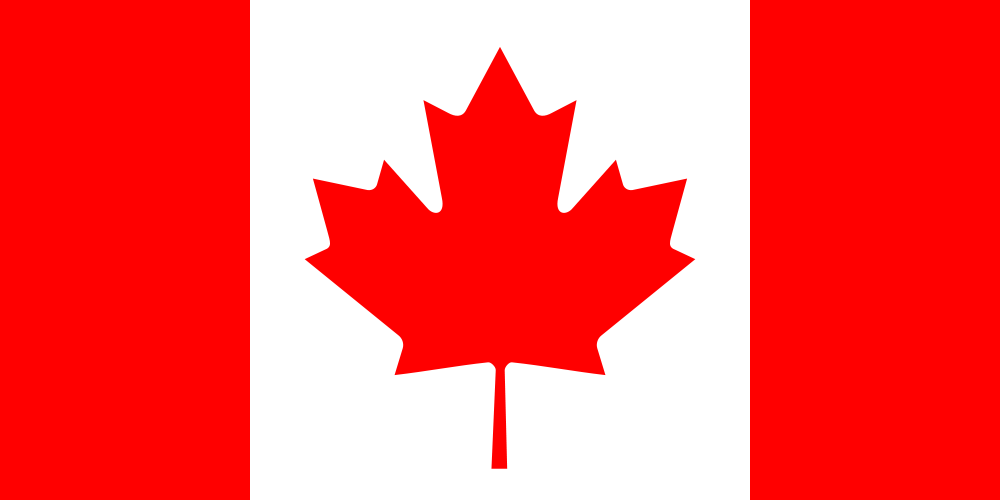
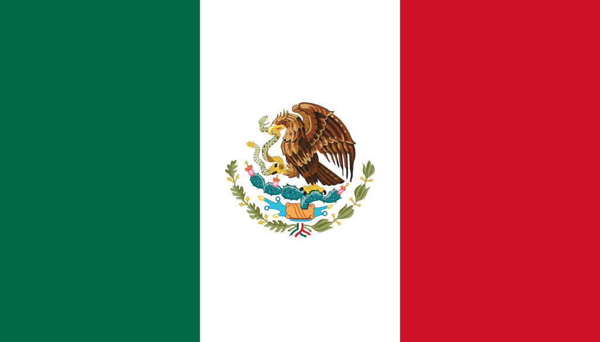
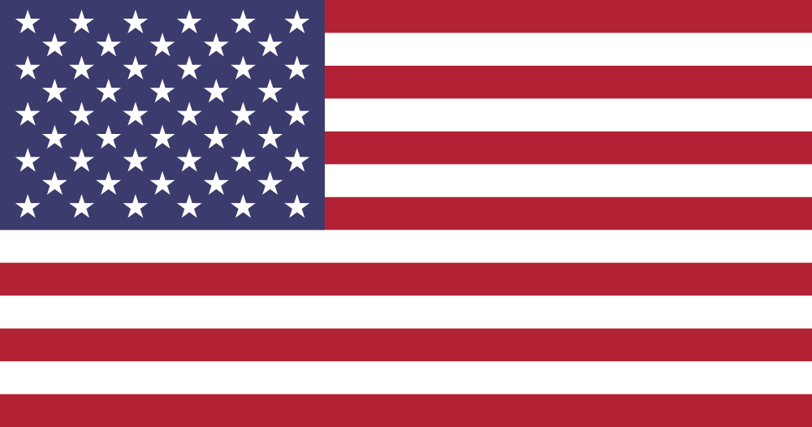

Turismo en Brasil
Tuturismo BR es una página en la que podrás aprender todo lo que necesitas sobre el turismo en Brasil: hoteles, sitios donde comer, restaurantes, sitios turísticos y recomendaciones. Información turística y especialmente pensada para que tus viajes a Brasil sean todo un éxito. Hemos recopilado muchos datos interesantes que creemos te pueden ayudar a planear tu viaje y esperamos que te pueda ser de mucha utilidad.
Lugares
Rio de Janeiro
La ciudad de Río de Janeiro se encuentra dividido en cuatro zonas muy diferentes que son la zona Sur, la zona Norte, la zona Oeste y la zona Centro...
Ver más
Camboriú
Camboriú es una enorme bahía con una vida nocturna que llama a miles de turistas al año, con clubes nocturnos, fiestas en la playa...
Ver más
Florianopolis
Florianópolis es capital del estado de Santa Catarina, al sur de Brasil. Es una isla rodeada por el Océano Atlántico. Dentro de ella hay dos lagunas de grandes dimensiones...
Ver más
Embajadas
Embajda de españa

La Embajada de España en Brasil, es la máxima representación de España en este país, se encuentra ubicado en la ciudad de Brasilia y se encarga de mantener las adecuadas relaciones bilaterales además de tratar temas de interés común como en el aspecto político, económico, de comercio, cultural y turístico.
Dirección: Av. das Nações, Q. 811, Lt. 44 70429-900 Brasília, DF Brasil
Teléfono: (061) 3701.1600 / +55.61.3701.1600
Embajada de Canada

La Embajada de Canadá en Brasil, es la máxima representación de Canadá en este país, se encuentra ubicado en la ciudad de Brasilia y se encarga de mantener las adecuadas relaciones bilaterales además de tratar temas de interés común como en el aspecto político, económico, de comercio, cultural y turístico.
Dirección: Av. das Nações, Quadra 803, Lote 16 70410-900 Brasília DF, Brasil
Telefono:(061) 3424.5400 / +55.61.3424.5400
Embajada de Reino Unido
La Embajada de Reino Unido en Brasil, es la máxima representación de Estados Unidos en este país, se encuentra ubicado en la ciudad de Brasilia y se encarga de mantener las adecuadas relaciones bilaterales además de tratar temas de interés común como en el aspecto político, económico, de comercio, cultural y turístico.
Direccion: Setor de Embaixadas Sul, Quadra 801, Lote 8, Asa Sul - Brasília - DF, 70408-900, Brasil
Telefono+55 61 3329-2300
Pagina Web
Embajada de Mexico

La Embajada de México en Brasil, es la máxima representación de México en este país, se encuentra ubicado en la ciudad de Brasilia y se encarga de mantener las adecuadas relaciones bilaterales además de tratar temas de interés común como en el aspecto político, económico, de comercio, cultural y turístico.
Dirección:SES Av. das Nacoes Quadra. 805 Lote 18 CEP 70412-900 Brasília DF, Brasil
Telefono:(061) 3204.5200 / +55.61.3204.5200
Embajada de Estados Unidos

La Embajada de Estados Unidos en Brasil, es la máxima representación de Estados Unidos en este país, se encuentra ubicado en la ciudad de Brasilia y se encarga de mantener las adecuadas relaciones bilaterales además de tratar temas de interés común como en el aspecto político, económico, de comercio, cultural y turístico.
Direccion:Av. das Nações Quadra 801, Lote 03 70403-900 - Brasília, DF Brasil
Telefono: (061) 3312.7000 / +55.61.3312.7000